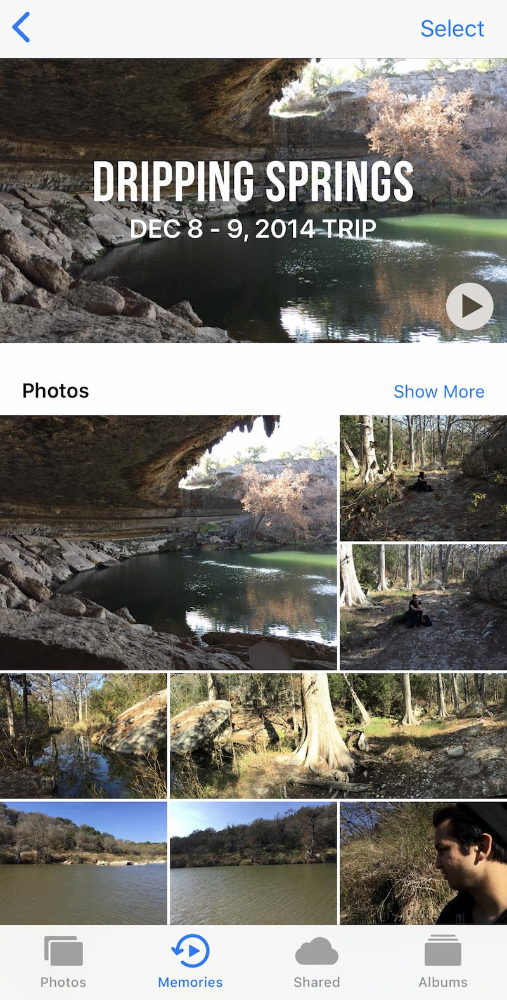

Computer-generated memories
February 23, 2018
Originally published (by me) on the SI 410 Ethics and Information Technology class blog.
A few years ago I went on a spontaneous trip to Dripping Springs, a small town in Texas with beautiful parks and trails. I took a few photos with my phone along the way. The image below shows how my phone created a distinct "memory," including the location, days of the trip, and all of the relevant photos. It even shows me the people identified in the photos, which can bring you to a page to see all photos on your phone with that specific person.
Check out the Memories feature of your phone's photo app. You may be surprised about how good it is at identifying key trips, moments, and holidays.
In “The Second Coming,” David Gelernter envisioned (in the late 90s) a future where computers don’t organize and recall information in the traditional file-list manner, but instead in the same way a human does. He states that computers function primarily as file cabinets, but humans have the ability to understand the relationship between different pieces information in order to retrieve them without specific labels.
Through their advanced photo algorithms, Apple and Google are one step closer to Gelernter's vision. I just took some photos over a couple days and my phone curated a page that is very representative of my trip. Just as I think of words that will trigger this memory like "Texas," "park," "late 2014," "my friend Raj," Apple is doing something very similar to put these photos together in an easily accessible manner.